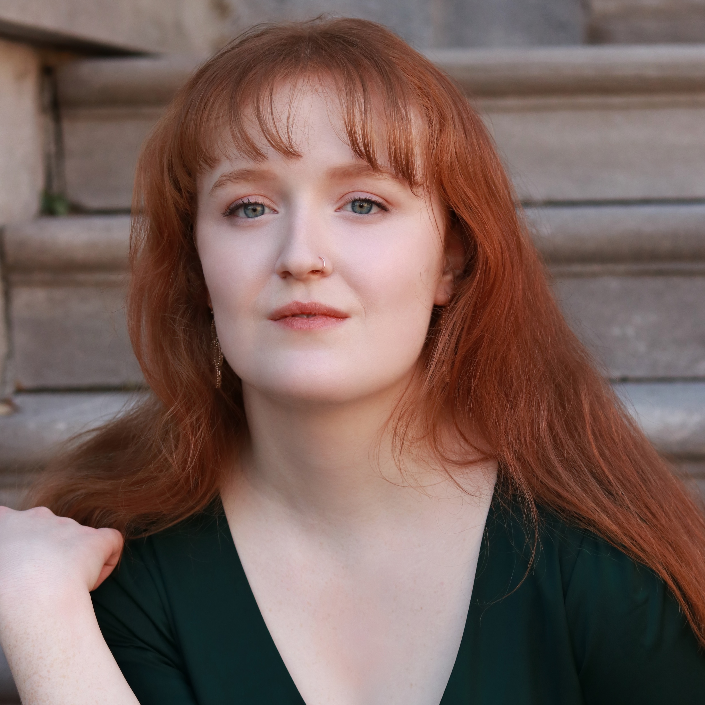
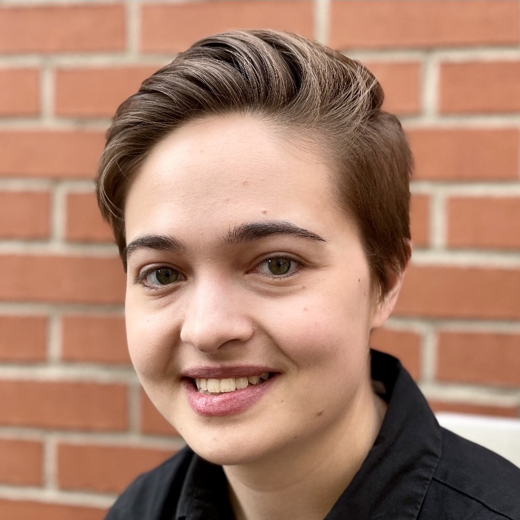

Danika Lorèn
Composer
Nicole Ross
Artistic Director

Martine Jomphe
Music Director

Grace Skehan is a Montréal based mezzo-soprano and graduate of McGill University's Schulich
School of Music. In 2022, she completed her second, and final season with Opera McGill where she had the
pleasure of performing as a featured chorus member in Mozart's Don Giovanni. She also enjoyed
workshopping Tong Wang's new opera, Labyrinth of Tears, as a part of the Opera McGill Beta Lab
Project.
Grace is the recipient of several prestigious awards including the Phyllis and Bernard
Shapiro Fellowship in Opera and the Evangelyna Etienne Award from the Handel and Haydn Society.
As an ensemble musician, Grace has toured Canada with McGill's Schulich Singers. Stateside
she has performed with the Handel and Haydn Society on various major programs including NPR's From the Top and
the BBC's Great American Railroad Journeys.
As a music administrator, Grace has worked with the Boston Early Music Festival, Boston
Baroque, and McGill's Schulich School of Music where she recently finished her two year term as the
administrative assistant to the Voice Area.
Upcoming projects include a “Night at the Opera” concert series which Grace is producing in
partnership with her neighborhood bookstore. Grace is currently a student of Ariane Girard.
Grace Skehan
Artistic Partner

Grace Ivey, originally from rural Alaska, is a mezzo-soprano and emerging stage director based
in Montréal. She received her Bachelor's of Music in classical vocal performance at McGill
University. During her time at McGill, Grace performed roles in multiple productions with Opera
McGill including Miles in The Turn of the Screw and Willie Maurrant in Street Scene. Grace's
passion for storytelling and theater, combined with her background in classical singing, drew her
to opera stage directing. Grace recently received a professional certificate in opera direction
through Ithaca College where she staged scenes from Dialogues des Carmélites and studied
with Chuck Hudson.
Grace Ivey
Stage Director, scenes II-IX
Christine Pallon
Website Developer